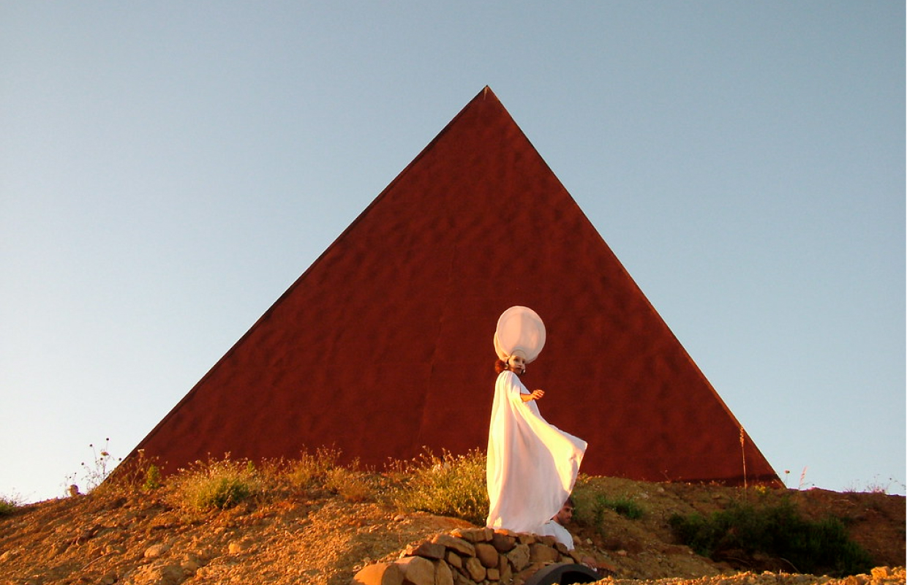

Piramide 38° parallelo
Scopri l'artista
La piramide è un'imponente installazione artistica realizzata da Mauro Staccioli nel 2010, situata a Motta d'Affermo. L'artista è noto per le sue sculture che rispondono alle esigenze della società, integrandosi perfettamente con gli ambienti circostanti. Quest'opera, un tetraedro cavo alto 30 metri in acciaio corten, domina la costa e le alture, toccando il 38° parallelo, e rappresenta un punto di incontro tra l'immaginaria misurazione umana e la materialità del landmark.
La struttura interagisce con l'ambiente attraverso l'ossidazione dell'acciaio corten, assumendo un colore bruno intenso che si integra con lo spazio naturale circostante. Orientata verso ovest, presenta una fessura lungo lo spigolo occidentale che filtra la luce del tramonto, creando un'atmosfera suggestiva. Ogni 21 giugno, la Piramide diventa protagonista del Rito della Luce, un festival in cui artisti internazionali si esibiscono. La Piramide durante il rito è accessibile tramite un tunnel cilindrico in metallo, offrendo agli spettatori la possibilità di partecipare a esibizioni e concerti.
L'installazione è caratterizzata da una fessura che, nell'ora del tramonto, permette alla luce di penetrare all'interno. Le pietre "ferrose" levigate dal mare completano il centro della piramide, formando una spirale. Simbolicamente, il 38° Parallelo – Piramide è associato a Seoul, Smirne e San Francisco, occupando lo stesso parallelo.
"38° Parallelo – Piramide" si trova a Motta d'Affermo, sul vertice di una rupe che affaccia sul mare, le isole Eolie e gli scavi archeologici di Halaesa. Il percorso per raggiungerla è abbastanza semplice, ma l'attenzione è richiesta nell'ultimo tratto di strada non asfaltato. La Piramide è parte della Fiumara d'Arte, insieme a opere come "Energia mediterranea" di Antonio di Palma, e contribuisce a arricchire il panorama artistico e culturale della zona.